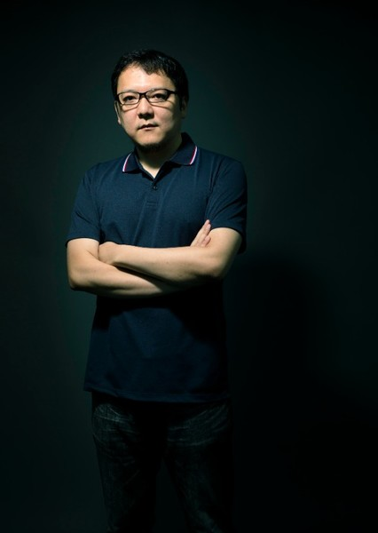
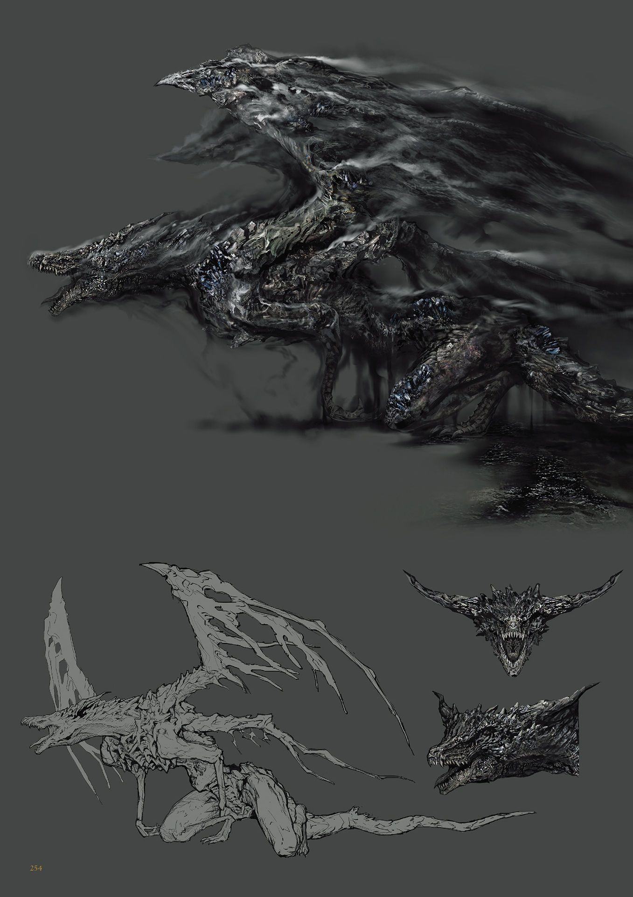

Hidetaka Miyazaki
Biography
Hidetaka Miyazaki is a Japanese video game director, designer, and writer who has become one of the most influential figures in modern gaming. Born in 1975, he began his career in the gaming industry after graduating from university, initially working on various projects before finding his calling at FromSoftware. He is best known as the creative director and driving force behind the Dark Souls series, as well as the critically acclaimed Bloodborne. Miyazaki's unique vision has redefined what players expect from action RPGs, emphasizing challenge, exploration, and atmospheric storytelling over traditional game design conventions.

His Work
- Dark Souls (2011) - Director
- Dark Souls II (2014) - Director
- Bloodborne (2015) - Director
- Dark Souls III (2016) - Director
- Elden Ring (2022) - Director

Miyazaki's games are renowned for their punishing difficulty, haunting atmosphere, and innovative design that challenges conventional game development wisdom. He has influenced countless developers and players worldwide, spawning an entire subgenre of "Souls-like" games that attempt to capture the magic of his vision. His approach to game design emphasizes player agency, environmental storytelling, and the satisfaction of earned victories, creating experiences that linger long after the credits roll.
Early Career and Influences
Miyazaki began his career at FromSoftware in 2004, initially working on the mecha-based Armored Core series before transitioning to the action RPG genre that would define his legacy. His work draws deep inspiration from classic fantasy literature, particularly the epic world-building of J.R.R. Tolkien and the cosmic horror elements of H.P. Lovecraft. These influences are evident in the richly detailed worlds, ancient mysteries, and sense of overwhelming scale that characterize his games. Miyazaki's unique ability to blend these literary traditions with innovative gameplay mechanics has created a signature style that feels both timeless and revolutionary.
Design Philosophy
Miyazaki believes in creating games that challenge players while rewarding perseverance. His philosophy emphasizes exploration, discovery, and the joy of overcoming difficult obstacles.
- Emphasis on player agency and choice
- Atmospheric world-building over linear storytelling
- Difficulty as a means of engagement, not frustration
- Incorporation of multiplayer elements for social interaction
Impact on Gaming
Miyazaki's work has spawned an entire subgenre of "Souls-like" games that continues to grow and evolve. Titles like Nioh, The Surge, Salt and Sanctuary, and countless others draw heavily from his design principles, proving the lasting impact of his vision. Beyond direct clones, his influence can be seen in games across genres that prioritize challenge, exploration, and meaningful player choices. Miyazaki has fundamentally changed how developers approach difficulty in games, showing that well-designed hard games can be more rewarding and engaging than easy ones.